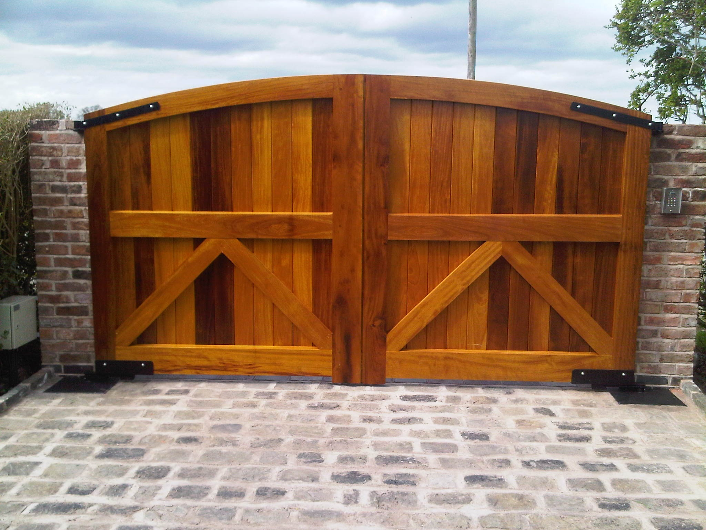
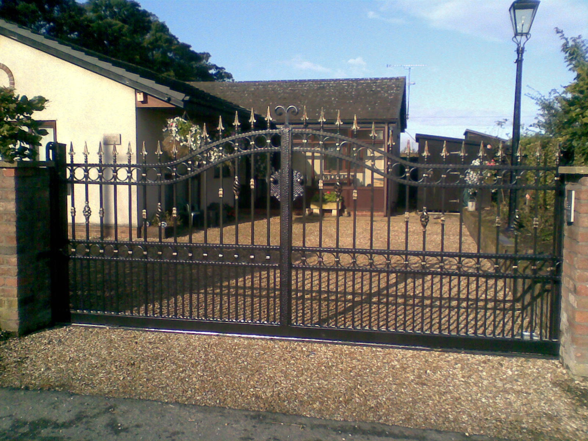
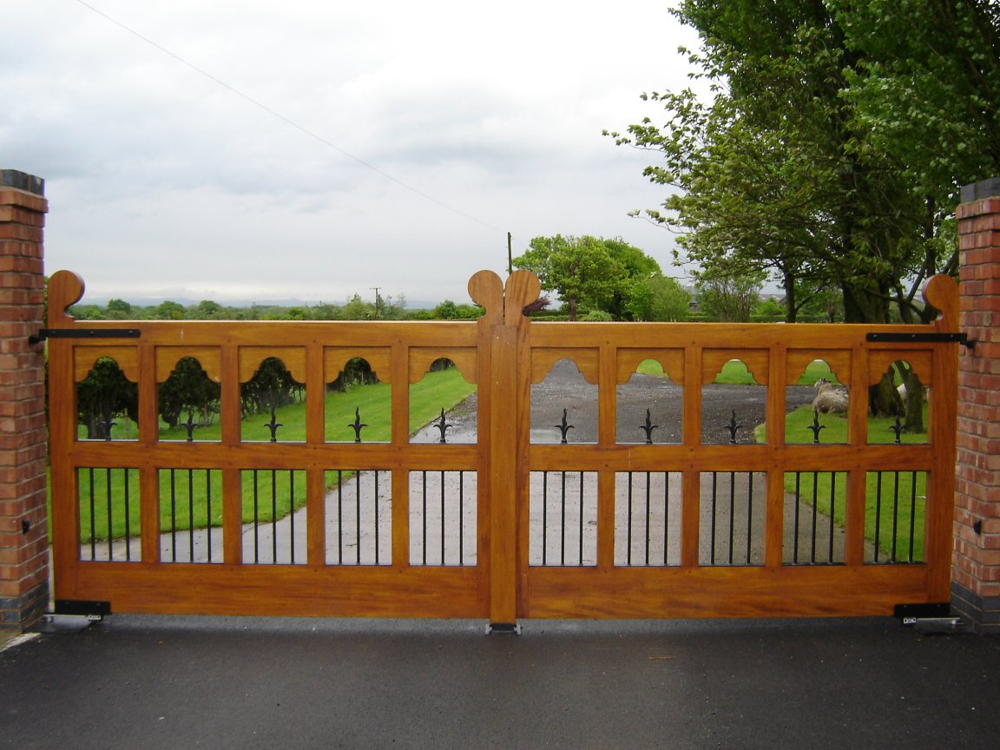
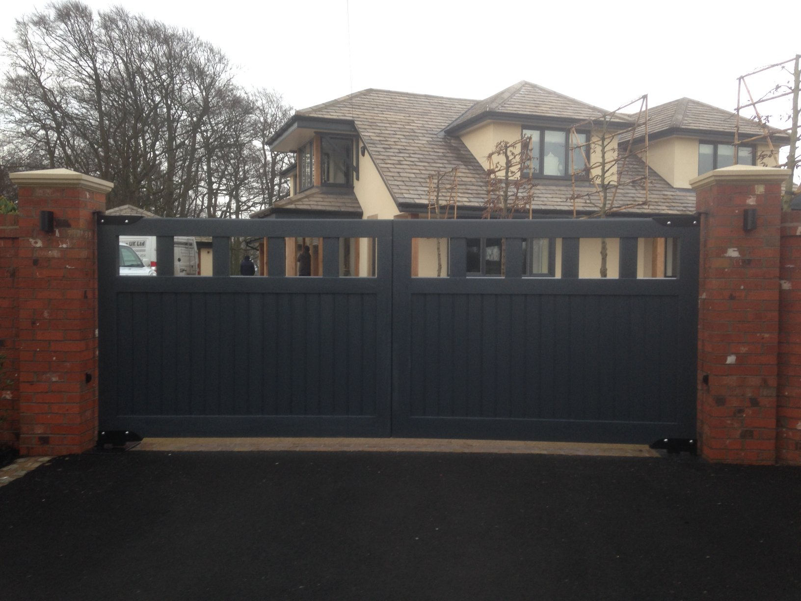
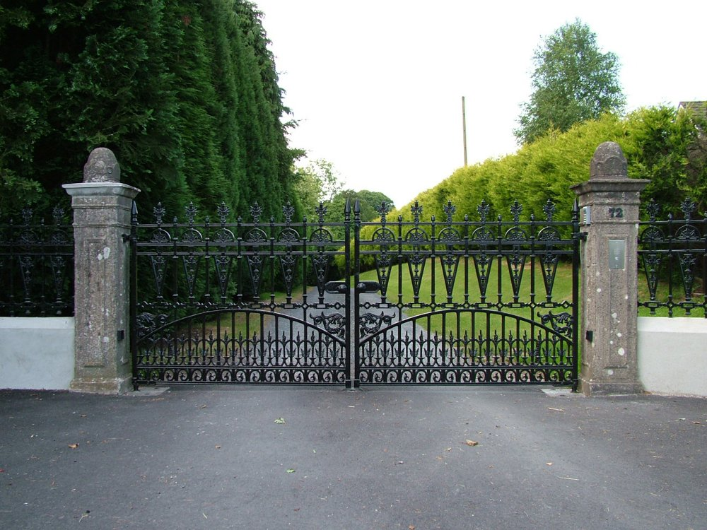
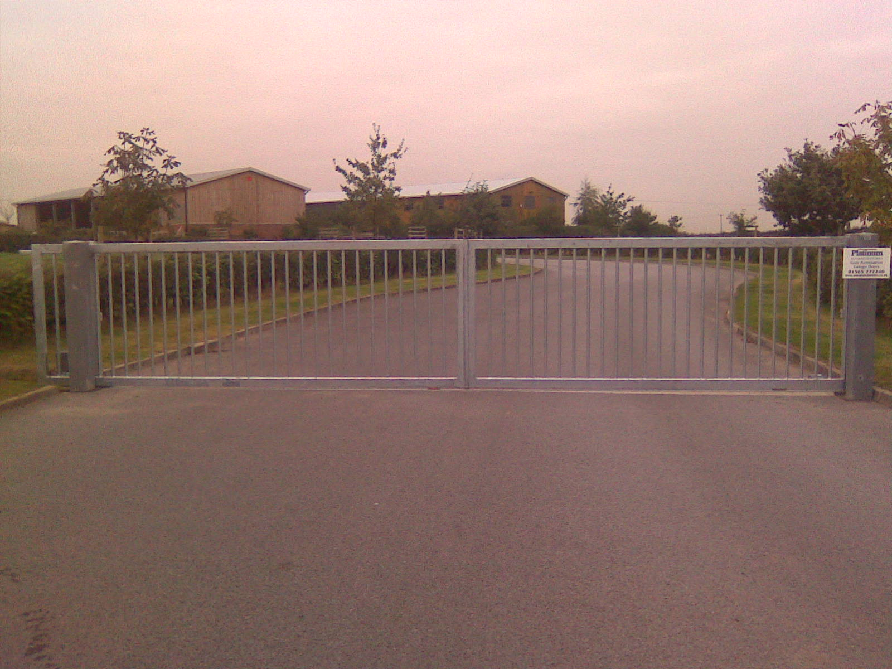

Press. Open. Home.
Made to measure gates that open for you, built and fitted by Platinum in Antrobus, Cheshire.
The gate opens. You stay dry.
Rain
One press from the car, and the gate is open before you reach it.
Made to measure
Every gate is built in a size and design to suit your drive, in timber or wrought iron.
Safe as houses
Safety devices come as standard, never as an optional extra.
Pick a gate. We'll make it fit.
A few from our own gallery. Swipe for more.






"It'll be alright, what could possibly happen?" Quite a lot, actually.
A gate that moves on its own is a machine, so every Platinum job starts with a safety survey. We look for six things before we fit anything.
Got older gates? Most fitted before the regulations had no safety devices at all. We can usually upgrade them to work with what you already have.

The clever bits.
"In this day and age it's hard to find a company who care so passionately about their craftsmanship."
"The new gates have changed the appearance of our home."